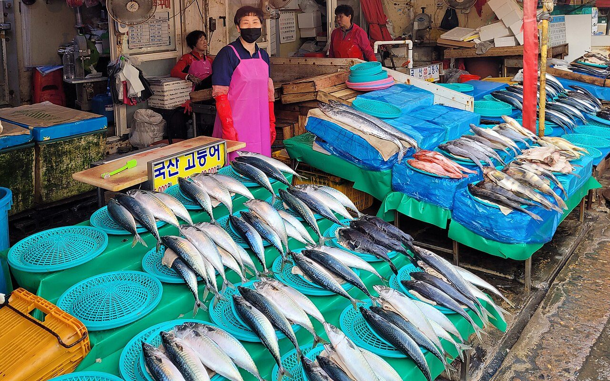
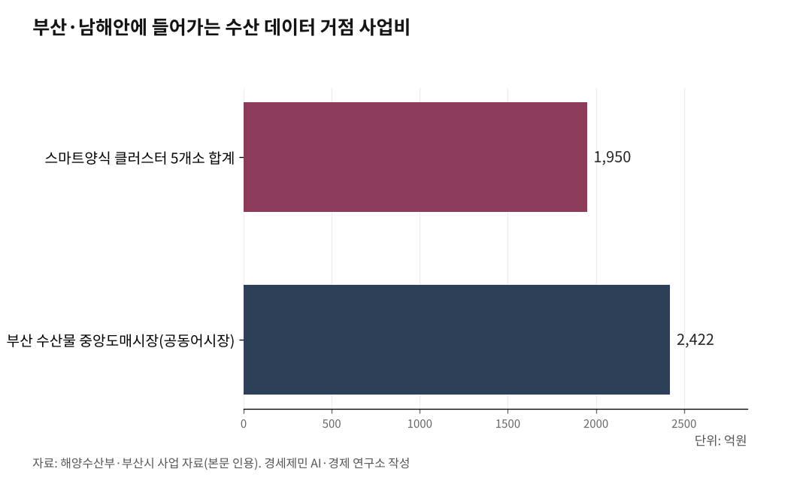

부산엔 스마트양식 1950억·어시장 2422억, 인천엔 데이터 거점도 없다
스마트양식 클러스터 부산·전남·강원·경북·제주 5개소 1950억원, 인천 부재
부산공동어시장 2422억원 2029년 준공, 인천종합어시장은 1975년 그대로
꽃게 총허용어획량 5883톤서 3076톤 절반 감축, 위판 단일 거점이 없다
AI경세제민=김갑봉 기자 | 해양수산부가 2019.11.11. 「해양수산 스마트화 전략」을 발표하고 7년이 지났다. 부산·전남·강원·경북·제주가 그 사이 스마트 수산 거점을 가져갔다. 인천은 거점이 없다.

수산 R&D 격차가 스마트 수산 단계에서 다음 격차로 이어지고 있다. 데이터 거점이 없는 자원이 협상력으로 전환되지 않는 구조가 인천 꽃게 총허용어획량 절반 감축에서 드러났다.
스마트 수산은 결국 데이터 사업이다
해수부는 「해양수산 스마트화 전략」에서 비전을 "스마트 해양수산 선도국가 도약"으로 제시했다. 9대 핵심과제 25개 세부 추진과제를 담았다.
수산 분야 핵심과제는 셋이다. 지속가능한 스마트 어업 관리체계, 스마트양식, 수산물 유통·가공 스마트 가치사슬이다.
세부 사업도 함께 들어갔다. 총허용어획량(TAC, Total Allowable Catch) 기반 어업관리, 어종·어획량을 해상에서 실시간 입력하는 전자어획보고시스템, 양륙단계 어획량 실시간 측정 시스템이 1차다. 인공지능(AI, Artificial Intelligence) 옵서버, 빅데이터 기반 수산자원 예측, 첨단 해수순환여과시스템(RAS, Recirculating Aquaculture System) 양식, 스마트 위판장도 들어갔다.
해수부는 인공지능 옵서버 사업에 2021년부터 2023년까지 3년간 106억원을 투입했다. 어선과 육상 양륙장에 지능형 폐쇄회로텔레비전(CCTV, Closed Circuit Television) 기반 인공지능 옵서버를 설치해 어획량과 어종, 불법조업 여부를 실시간으로 자동 수집·분석하는 체계다.
도구는 사물인터넷(IoT, Internet of Things, 사물 간 통신 기술)·인공지능·빅데이터다. 운영 기반은 데이터다. 어종·어획량·시기·해역 데이터가 자원량 추정 모형의 입력값이 되고, 양식장 환경 데이터가 변동성 통제의 기반이 되며, 위판·유통 데이터가 산지와 소비자 사이 정보 단절을 끊어내는 근거가 된다.

부산·전남이 거점을 가져갔다
해수부 스마트양식 클러스터 조성사업이 2019.01. 시작했다. 1개소당 사업비 400억원이 들어가는 4년 사업이다. 테스트베드 300억원에 배후부지 100억원을 더한 구조다.
부산이 1차 사업지였다. 부산시는 기장군 일광면 부경대 수산과학연구소 부지 6만7320㎡에 사업비 400억원(국비 220억원·시비 120억원·자부담 60억원)을 투입했다. 부경대와 에코아쿠아팜이 참여해 대서양 연어 연 500톤 규모 테스트베드를 짓는다.
2차 경남 고성은 사업을 포기했다. 3차 전남 신안은 부지 7만7896㎡에 새우와 개체굴 양식 단지를 조성하고 있다. 4차 강원은 강릉시 연곡면과 양양군에 연어 단지를 짓는다. 동원산업이 2000억원 투자를 약정했다. 5차 경북 포항도 연어 양식이고, 6차 제주는 사업비 350억원으로 넙치 환수율 저감형 시스템을 도입한다. 5개소 합계 사업비가 1950억원이다.
인천은 1차부터 6차까지 어디에도 들어가지 못했다.
부산공동어시장 현대화는 별도 사업이다. 부산시는 2025.12.19. 착공해 47개월 사업 기간을 거쳐 2029년 말 준공한다. 사업비 2422억원(국비 1655억원·시비 509억원·자부담 258억원)으로 부산 서구 암남동 부지 6만4247㎡에 연면적 6만1971㎡ 시설을 짓는다.
콜드체인·자동 물류시스템·밀폐형 위판장·자동 선별기·온라인 경매·데이터 기반 유통 플랫폼이 한꺼번에 들어간다. 1973.01.22. 부산 서구 남부민동 현 위치에 개장한 부산공동어시장이 2029년 중앙도매시장으로 격이 올라간다.
부산공동어시장 2024년 위판량은 12만6000톤이다. 고등어만 7만4000톤으로 국내 거래량의 61.8%다. 단일 거점에 50년 넘게 누적된 위판 데이터가 거점화 기반이 됐다.
부산은 R&D 거점도 같은 도시 안에 묶었다. 국립수산과학원 본원 약 320명이 부산 기장군에 있고, 한국해양수산개발원(KMI, Korea Maritime Institute)·한국해양과학기술원(KIOST, Korea Institute of Ocean Science and Technology)이 부산 영도구에 있다. 데이터·연구·시장이 한자리에 모였다.
인천 꽃게 절반 깎였다, 원인은 위판 데이터 분산이다
인천 자원이 약하지 않다. 인천 갯벌은 728.3㎢로 전국 갯벌의 29.3%다. 인천 섬은 192개로 유인 40개·무인 152개다. 인천 어업 생산량은 약 8만1000톤·생산액 4200억원이다. 꽃게 어획량은 전국 1위다.
문제는 위판 데이터 단일 거점이 없다는 점이다. 해수부가 2025.07.부터 적용한 「총허용어획량 설정 및 관리에 관한 시행계획」을 보면 2026년도 꽃게 TAC 총량은 3891톤이다. 전년 6702톤 대비 42% 감소했다.
인천 배정 물량이 5883톤에서 3076톤으로 48% 줄었다. 2003년 꽃게 TAC 제도 시작 이후 역대 최저치다. 인천시가 해수부와 협의해 해수부 유보량 679톤과 시 자체 유보량 414톤을 합쳐 1093톤을 추가 확보했다.
송병훈 인천시 수산과장은 2026.02.19. "현실적인 TAC 배정 물량을 확보하려면 어업인의 위판 실적 축적이 무엇보다 중요하다"고 말했다. TAC 산정 근거가 위판 실적이다. 인천은 인천·경인서부·경인북부·영흥·경기 5개 수협으로 위판이 갈라져 있다.
부산공동어시장 같은 단일 거점이 없는 구조다. 자원량 추정 모형에 들어갈 데이터가 부산만큼 누적되지 않으니 협상에서 깎인다.
R&D 거점도 빈약하다. 인천에는 국립수산과학원 서해수산연구소 1개소가 중구 선녀바위로에 있다. 서해 전체 갯벌과 섬 자원을 1개소가 감당하기에 인력과 예산이 부족하다는 지적이 시리즈 안에 누적돼 있다.
김 수출 11억달러 시대, 인천 통계는 따로 없다
한국 김 수출액이 2025년 11억3300만달러(약 1조6109억원, 1달러=1421.78원, 2025년 평균 기준)로 사상 처음 10억달러를 넘었다. 단일 수산식품 수출 1위 품목, 글로벌 점유율 70%다.
시·도별로 보면 전남이 4억3200만달러(약 6142억원)로 38.1%다. 충남이 2억1500만달러(약 3057억원)다. 시·군 단위로는 전남 목포가 1억7500만달러(약 2488억원)로 4년 연속 마른김 수출 1위다. 인천 김 수출은 별도 통계로 잡히지 않는다.
원물은 늘어나고 있다. 옹진군이 2026.04.23. 영흥면 선재리 일원 김 양식장 14건 280.1ha 면허를 발급했다. 옹진군 김 양식장 면적이 1444ha로 확대됐다. 2026년산 물김 4592톤(약 57억원) 추가 생산으로 옹진 전체 물김이 1만5874톤(약 200억원)으로 추산된다.
원물은 있는데 가공·수출로 이어지지 않는다. 인천 시역 안에 마른김 가공 시설이 없고, 경인 전체로도 화성시 대부도 청춘수산 1곳에 그친다. 수도권계획관리지역에서 하루 50톤 이상 폐수배출 시설이 막혀 있고, 2018년 김 세척수 폐수 재분류로 시설 확장에 제동이 걸렸다.
2024.01. 한 달 동안 폐기된 물김 6000톤 가운데 경인이 386톤으로 전남(5296톤) 다음 2위다. 양식해도 가공할 곳이 없으면 버려진다. 가공이 없으면 수출이 없고, 수출이 없으면 통계도 없다.
디지털 어시장 흐름도 인천에 비켜 있다. 노량진수산시장이 수도권 도매 50%(일 250~300톤)를 처리하며 출하자·중도매인·냉동창고 정보시스템을 운영한다. 해수부는 2024.07.01. 농수산물 온라인도매시장(kafb2b.or.kr)에서 수산물 거래를 시작했다. 부산공동어시장은 2029년 온라인 경매 체계까지 갖춘다. 인천종합어시장은 1975.12.20. 인천 중구 항동 개장 이후 약 500여 점포가 영업 중이다.
인천공항이라는 강점은 옆에 있다. 인천국제공항공사가 발표한 2024년 항공 화물은 290만6067톤으로 세계 3위, 해상-항공(Sea-Air, 해상 운송과 항공 운송 연계 복합 수송) 환적은 11만8000톤으로 개항 이래 최대다. 인천국제공항공사는 신선 화물·바이오·반도체 전용 터미널 계획을 추진하고 있다. 인천공항 신선 수산물 항공 수출 품목·물량·국가별 데이터가 별도 시스템으로 잡히지 않는다.
노르웨이·일본·호주는 데이터 거점부터 잡았다
노르웨이는 신테프 오션(SINTEF Ocean, 트론헤임 소재 응용연구기관)이 2018년부터 2022년까지 유럽연합(EU, European Union)의 스마트피시 호라이즌 2020(SMARTFISH H2020, 유럽연합 호라이즌 2020 프로그램의 수산 분야 디지털화 연구 프로젝트) 연구 프로젝트를 주관했다. 총사업비 694만유로(약 90억원, 1유로=1358원, 2022년 평균 기준) 가운데 유럽연합 기여금이 597만유로(약 78억원)다. 머신비전·카메라·머신러닝·인공지능·빅데이터 기술을 어선 자원량 평가 데이터 자동 수집과 어업 규제 준수 입증, 생태계 영향 저감에 적용했다.
노르웨이는 2022년 기준 글로벌 양식 대서양 연어 시장의 50%를 점유한다. 30년 가까이 1위 자리다.
일본 미야기현은 2025.01.21. 엔티티동일본(NTT東日本, 일본 통신회사 NTT 동일본 자회사)과 「정보통신기술(ICT, Information and Communication Technology) 활용 스마트 육상양식 보급에 관한 연계협정」을 맺었다. 미야기현 수산기술종합센터(이시노마키) 수조에 카메라·센서를 설치해 인공지능과 통신기술로 어체 크기와 수온을 관리한다. 미야기 명산 은연어 양식이 1차 대상이다. 엔티티동일본이 광역지자체와 육상양식 협정을 맺은 첫 사례다.
호주는 뉴사우스웨일스주(NSW, New South Wales, 호주 남동부 주)가 670만호주달러(약 58억원, 1호주달러=859.5원, 2021년 평균 기준) 「클라이밋 스마트 파일럿츠(Climate Smart Pilots, 기후 스마트 시범사업)」 프로젝트로 클라이드강(Clyde River) 강어귀 굴 양식장에 로라완(LoRaWAN, Low Power Wide Area Network, 저전력 광역 통신망) 기반 사물인터넷 센서 네트워크를 깔았다. 부표 10개에 수질·수온·염분 센서를 달아 폭염과 홍수에 따른 굴 폐사 위험을 어업인에게 실시간으로 알린다. NSW 굴 생산은 연 5900만호주달러(약 507억원)다.
세 사례 공통점은 자동화 기술 도입 이전에 데이터 인프라부터 만들었다는 점이다. 부산이 국립수산과학원 본원·KMI·부산공동어시장을 한 도시 안에 묶어 거점화한 흐름과 같은 경로다.
인천해양산학융합원, 첫 해 일이 데이터 통합이다
인천시가 2025년부터 2026년까지 추진해 2026.03.09. 완료한 「인천 해양수산 산·학·연 거점 조성을 위한 타당성 검토 및 기본계획 수립」 용역이 설계한 인천해양산학융합원이 출발선이다. 인천투데이가 2026.03.25.과 31.에 인천해양진흥원 설립 필요성 확인과 첫 관문 통과를 보도했다.
같은 도시 안에 선례가 있다. 인천 송도 항공우주산학융합원이 2017년 직원 8명으로 출발해 2025년 58명, 누적 사업비 1637억원으로 자랐다. 9년 동안 R&D 173건, 교육생 8637명, 기업지원 321건을 누적했다. 인하대학교가 용지와 건물을 내놓고, 인천시가 정책과 예산을 맞추고, 인천국제공항공사가 항공산업 네트워크를 연결한 3자 협력 구조였다.
해양산학융합원이 첫 해 채워야 할 데이터 거점은 다섯 갈래다. 첫째, 인천·경인서부·경인북부·영흥·경기 5개 수협 위판 실적을 시 단위로 통합해 TAC 협상 근거자료를 만드는 일이다. 송병훈 수산과장이 짚은 진단의 직접 답이다.
둘째, 서해수산연구소와 함께 서해 자원량 빅데이터를 정비하는 과제로 꽃게·참홍어·주꾸미·새우·김이 1차 대상이다. 셋째, 갯벌 어종별 생산량과 섬 192개 어업권 데이터베이스를 만드는 일이다. 넷째, 인천공항 항공 콜드체인 신선 수산물 수출 데이터를 별도 트랙으로 구축하는 과제다. 다섯째, 옹진 김 양식 1444ha 양식 환경 데이터와 가공·수출 데이터를 연결해 11억달러(약 1조5640억원) 김 수출 시장의 인천 통계를 만드는 일이다.
부산이 50년 누적한 위판 자산을 인천이 단숨에 따라잡지는 못한다. 그러나 데이터 거점은 부산도 처음에는 없었다. 출발선을 긋는 일이 첫 해 과제다.
부산은 동남권 양식·수산식품 거점, 인천은 서해권 갯벌 양식·환황해 거점이다. 경쟁이 아니라 분업이다. 그 출발선이 데이터다. 인천이 지금 출발선을 긋지 않으면 격차는 더 벌어진다.
[연구윤리 공시] 본 기사는 「인천 해양수산 산·학·연 거점 조성을 위한 타당성 검토 및 기본계획 수립」(2026.03. 완료) 용역에 참여한 연구자가 작성했다. 동 용역의 분석을 본 기사 일부에 인용했다. 동 용역 발주처는 인천광역시이며, 본 기사 작성에 발주처의 관여는 없었다.
참고문헌
·"4차 산업혁명 시대 이끌 해양수산 스마트화 본격 시동", 해양수산부 보도자료, 2019.11.11. https://www.korea.kr/briefing/policyBriefingView.do?newsId=156360337
·"부산공동어시장, 반세기 만에 현대화", 해양수산부 보도자료, 2025.12.18. https://www.mof.go.kr/doc/ko/selectDoc.do?docSeq=64203&menuSeq=971&bbsSeq=10
·"어획량·불법어업 한 눈에…스마트 어업관리 시스템 개발", 식품저널, 2021.02.16. https://www.foodnews.co.kr/news/articleView.html?idxno=91146
·"해수부, 농수산물 온라인 도매시장에 수산물 첫 거래 개시", 푸드투데이, 2024.07.01. https://www.foodtoday.or.kr/news/article.html?no=185057
·"해수부, 꽃게 TAC 일부 풀었지만 턱없이 부족", 경인일보, 2026.02.02. 온라인 URL 없음
·"인천시, 꽃게 총허용 어획량 추가 물량 1093톤 확보", 이데일리, 2026.02.19. 온라인 URL 없음
·"옹진군, 축구장 392개 김 양식장 면허 올해 4천여t 추가 생산", 연합뉴스, 2026.04.23. 온라인 URL 없음
·"K-김 대박의 남은 과제", 경인일보 칼럼, 2026.03.10. 온라인 URL 없음
·"세계 2위 인천공항 상반기 화물 10%↑신선·바이오·반도체 전용터미널 예정", 인천투데이, 2024.08.18. https://www.incheontoday.com/news/articleView.html?idxno=251750
·"2024년 인천공항 Sea&Air 전자상거래 화물 역대 최대 11만8천톤 기록", 인천국제공항공사 보도자료, 2025.02.05. https://www.airport.kr
·"[중소기업협동조합과 인천경제 살리기] 3.인천종합어시장협동조합", 인천일보, 2020.11.02. http://www.incheonilbo.com/news/articleView.html?idxno=1064934
·"인천 갯벌 728.3㎢, 전국 갯벌의 29.3%", 인천섬발전지원센터 일반현황, 해양수산부 2018.12.31. 기준. https://www.iisland.or.kr/info/status.asp
·"노량진수산시장 일반 현황", 수협 노량진수산. https://www.suhyup.co.kr/suhyup/243/subview.do
·"어업생산통계", 통계청 KOSIS, 2023년 기준. https://kosis.kr
·"인천 섬 192개(유인 40·무인 152) 현황 발표", 한국섬진흥원·행정안전부·해양수산부 합동 발표, 2024년 말 기준. 온라인 URL 없음
·"Norway's salmon farming dominance over the past 30 years", The Fish Site, 2024.11. https://thefishsite.com
·"SMARTFISH Project Fact Sheet", European Commission CORDIS, Grant agreement ID 773521. https://cordis.europa.eu/project/id/773521
·"Fisheries Pilot - Estuary Sensor Platform", NSW Department of Primary Industries, 2021. https://www.dpi.nsw.gov.au/dpi/climate/case-studies/fisheries-pilot
·"연평균 통화 환율(Yearly Average Currency Exchange Rates)", 미국 국세청(IRS), 2026.02.24. 갱신. https://www.irs.gov/ko/individuals/international-taxpayers/yearly-average-currency-exchange-rates
·인천광역시·인하대학교 경기인천씨그랜트센터(2026), 『인천 해양수산 산·학·연 거점 조성을 위한 타당성 검토 및 기본계획 수립 용역 최종보고서(V15)』, 인천광역시 섬해양정책과, 2026.03.09. 온라인 URL 없음
※ 이 기사는 AI 프로그램 클로드를 활용해 작성했습니다.
사진 출처
· [대표사진] Bernard Gagnon, "Jagalchi Market 02.jpg", 위키미디어 공용, CC0, https://commons.wikimedia.org/wiki/File:Jagalchi_Market_02.jpg
※ 이 기사는 인공지능을 활용해 작성했습니다.
관련기사
- [인천해양산업, 생존기로㉓] 인천항 크루즈 1월 64항차서 3월 133항차, 모항 도시 전환 갈림길
- [인천해양산업, 생존기로㉑] 부산항 7부두 포트 4.0, 인천항도 피할 수 없다
- [인천해양산업, 생존기로⑳] 70조원 선박 수리·개조 시장 열렸다, 인천은 거점 0개
- [인천 해양산업, 생존의 기로㉔] 6.3 선거 일주일 앞, 인천 해양 자치권 시험대
저작권자 © AI경세제민 무단전재 및 재배포, AI학습 및 활용 금지